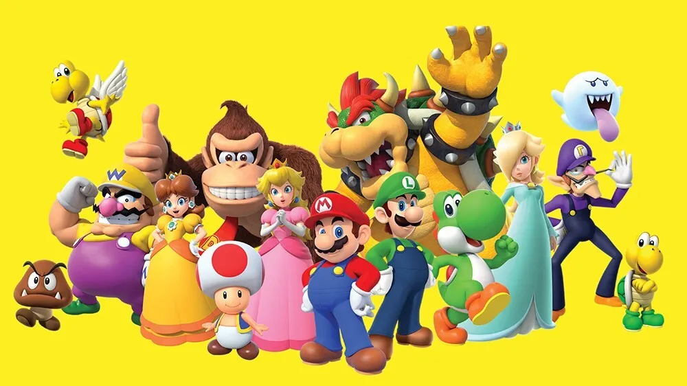

About super mario
Super Mario, created by Nintendo, is an iconic video game character who debuted in 1981's "Donkey Kong." As an Italian plumber, he saves Princess Peach from Bowser in various games. Known for its engaging gameplay and memorable music, the franchise remains a beloved staple in the gaming world.
Mario and his friends, including Luigi, Princess Peach, and Yoshi, embark on exciting adventures to save the Mushroom Kingdom from Bowser's clutches.
Mario Characteristics:
- A short, mustachioed Italian plumber wearing a red cap, blue overalls, and white gloves.
- Always ready to face dangers to rescue Princess Peach and protect the Mushroom Kingdom.
- Exceptional jumping and running abilities, often using power-ups to enhance his skills.
- Kind-hearted and always willing to help his friends and allies.
Mario friends:
- Luigi: Mario's taller, younger brother, known for his green outfit and slightly more timid nature.
- Princess peach:The ruler of the Mushroom Kingdom, frequently rescued by Mario from Bowser.
- Yoshi: A friendly dinosaur who can eat enemies and assist Mario with his long tongue and jumping abilities.
- Toad: A loyal servant of Princess Peach, recognizable by his mushroom-shaped head.